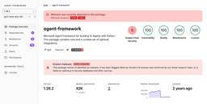

Socket
フィード

Hardening GitHub Actions Against Insider Threats
Socket
A practical guide to securing CI/CD pipelines against stolen credentials, covering GitHub Actions, trusted publishing, release approvals, and revocation.
2日前
MITRE Acknowledges Inaccurate Publication Timestamps in 87% of Its Recent CVE Records
Socket
MITRE acknowledges inaccurate publication timestamps in 87% of its recent CVE records and plans to retire the legacy system responsible in 2027.
3日前

Optimizely Supply Chain Attack Distributes Malware Across Global Brands
Socket
Attackers exploited Optimizely to inject malicious JavaScript into major websites, delivering cryptocurrency clippers, card skimmers, and iOS malware.
4日前

Microsoft’s agent-framework PyPI package Compromised with Credential Stealer 1
1
Socket
Compromised agent-framework versions 1.26.1 and 1.26.2 on PyPI use .pth startup hooks to exfiltrate Azure, GitHub Actions, and CI/CD credentials.
4日前

pnpm Introduces New Lockfile Format to Reduce Git Merge Conflicts
Socket
pnpm has introduced an experimental lockfile format designed to reduce Git merge conflicts by changing how dependencies are recorded.
4日前

ESLint Ends Paid Contributor Program as AI Upends Open Source Collaboration
Socket
From Rust to Godot and curl, open source projects are tightening contribution rules as AI-generated code strains maintainers and changes how developers collaborate.
7日前

Cyberattacks Are Skyrocketing in Japan as Researchers Trace AI-Assisted Intrusions
Socket
Japan faces a record surge in cyberattacks as researchers uncover AI-assisted intrusions, widespread data breaches, and growing pressure to patch vulnerabilities.
9日前
Malicious bee-js npm Release and Swarm Desktop Releases Deliver SleepyDuck Ethereum C2 Backdoor
Socket
Compromised maintainer accounts pushed malicious @ethersphere/bee-js 13.3.0 and Swarm Desktop 0.56.2, reusing SleepyDuck’s Ethereum-addressed C2 infrastructure.
12日前
Free Certified Patch for Critical Rails Active Storage Vulnerability
Socket
Socket has released a free Certified Patch for a critical Rails Active Storage vulnerability, giving developers time to upgrade to a secure Rails version.
15日前
Shai-Hulud Descendant Surfaces in Malicious Ruby Gem That Steals Credentials and Poisons AI Tools
Socket
A malicious Ruby gem runs a credential-stealing worm during installation, poisons AI coding tools, and can wipe files when a stolen GitHub token is revoked.
15日前